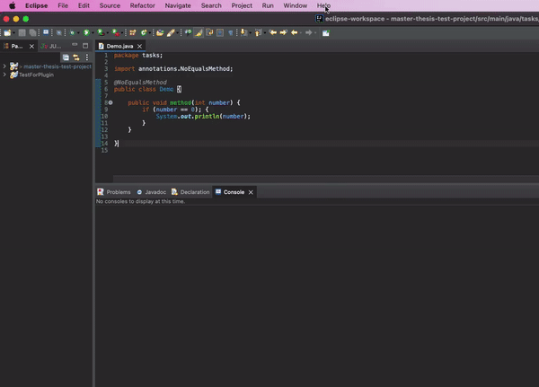
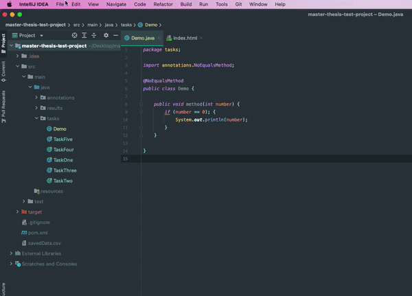

This is the download site for plugins as a part of a master thesis. The plugins should help Java students to
find errors in their code.
The code and a demo for the plugins are available at github:
Eclipse: https://github.com/JennStro/master-thesis-eclipse
Intellij: https://github.com/JennStro/master-thesis-intellij
Both plugins use the Java Parser to analyse the code. The plugin analyses one file at a time, and analyses the file you
currently have selected in your editor.
Backend parser: https://github.com/JennStro/master-thesis-backend-analyser
The project and plugins can be tested using a test project found at: https://github.com/JennStro/master-thesis-test-project
The test project is created with Maven and can therefore be used across the IDEs. The project creates a file that logs the timestamp and if the task is completed or not.
Download the zip file from the link above and unzip the file. In Eclipse choose "Help -> Install New Software -> Add -> Local". Choose the folder "master.thesis.eclipse.update.site" you downloaded earlier. You may have to uncheck "Group items by categories" to choose the plugin for installation. Accept the licence and finish the installation.
Download the zip file from the link above (do not unzip it!). In Intellij choose "Intellij IDEA -> Preferences -> Plugins -> Settings (the wheel) -> Install plugin from disk". Choose the zip file "master-thesis-intellij.zip" you downloaded earlier.
This download lets you use @annotations to disable some errors.
https://github.com/JennStro/master-thesis-disable-warnings-annotationsDownload the zip file from above and unzip it. In Intellij in your project, choose "File -> Project Structure -> Modules -> Dependencies -> + -> From JAR or Directories" and the .jar file you downloaded. You may have to add "requires master.thesis.disable.warnings.annotations;" in module-info.java before you can use it.
Download the zip file from above and unzip it. In Eclipse right click on your project, choose "Build Path -> Configure Build Path -> Libraries -> Modulepath -> Add External JARs -> and choose the .jar file you downloaded. You may have to add "requires master.thesis.disable.warnings.annotations;" in module-info.java before you can use it.